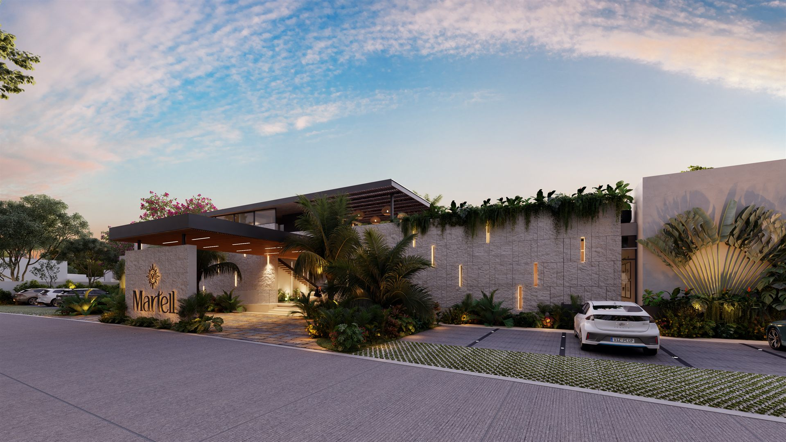
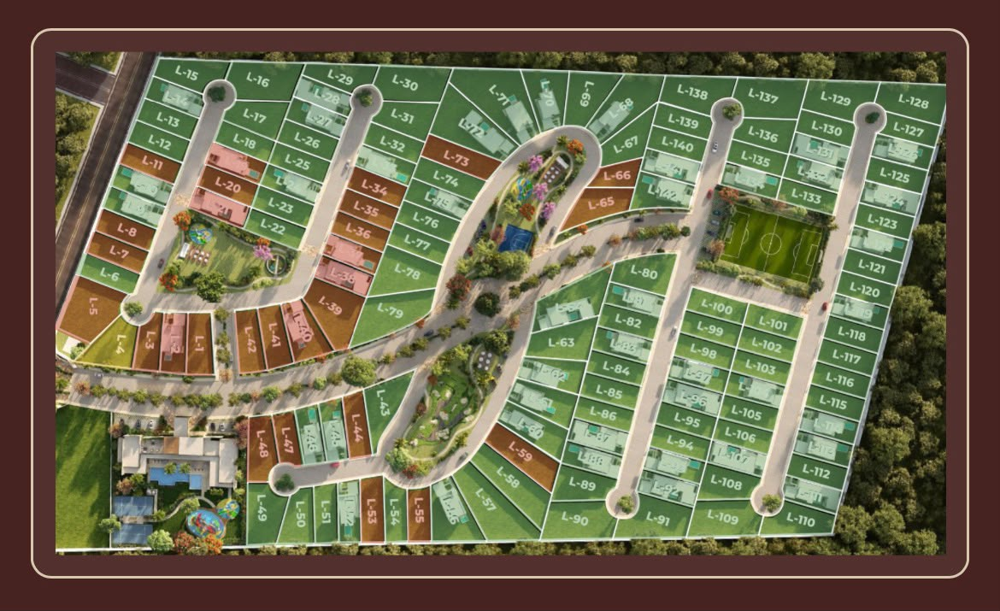
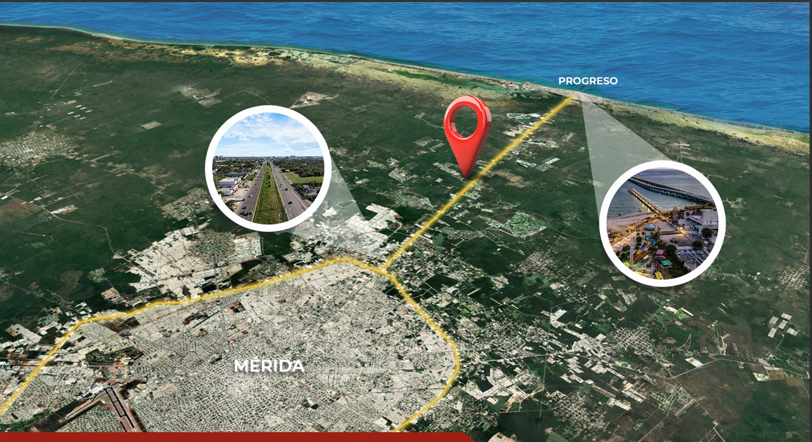
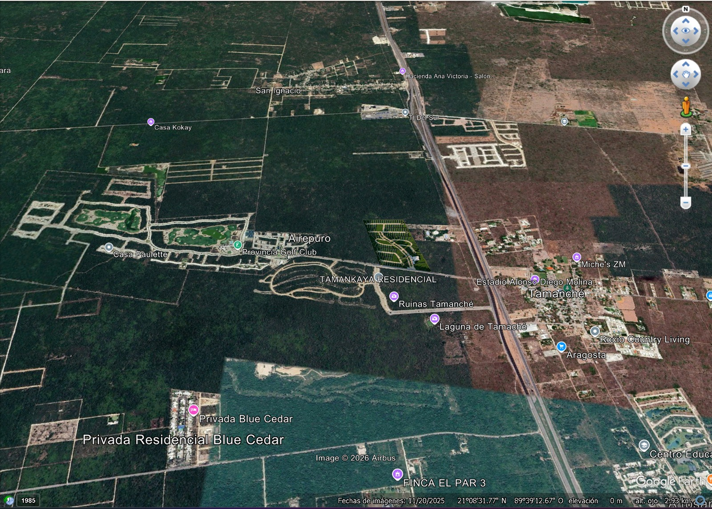

Martell Natural Living · Tamanché
Render conceptual incluido en el material de Martell.Un hogar en equilibrio con tu entorno.
Martell propone una experiencia residencial donde arquitectura, naturaleza y espacios para reunirse forman parte de una misma idea de vida.
Martell · Natural Living
Arquitectura y espacios para disfrutar la vida en comunidad.
La propuesta de Martell se presenta a través de una arquitectura contemporánea, jardines y áreas compartidas. Su identidad “Natural Living” pone el énfasis en una vida residencial conectada con el paisaje y con lugares para encontrarse.
El material arquitectónico de la casa club desarrolla distintos ambientes bajo una identidad común. Conoce el proyecto, consulta qué está construido y qué corresponde a las siguientes etapas.
Diseño contemporáneoEntorno residencialEspacios compartidos
La imagen es un render conceptual. El diseño, equipamiento, acabados y ejecución pueden cambiar respecto a la propuesta visual.
Casa club Martell
Un espacio común, distintas maneras de reunirse.
El documento arquitectónico de la casa club identifica ambientes sociales y de servicio que complementan la propuesta residencial.
Terraza lobby
Un espacio de llegada y encuentro que da la bienvenida a residentes e invitados.
Terraza restaurante
Un ambiente pensado para convivir alrededor de la mesa y prolongar las reuniones.
Salón de eventos
Un espacio versátil para encuentros privados y celebraciones de la comunidad.
Estos espacios aparecen en el proyecto arquitectónico de Casa Club Martell. Su construcción, disponibilidad, operación y fecha de entrega deben confirmarse con el equipo comercial.
Ubicación y conexiones
Al norte de Mérida, en el entorno de Tamanché.
Los mapas proporcionados sitúan el desarrollo en la zona de Tamanché y muestran su relación regional entre Mérida y Progreso.


Los mapas son referencias visuales del material recibido. Solicita al asesor el pin exacto, las rutas vigentes y la distancia desde los puntos que te interesen.
Recorrido visual
Conoce Martell en video.
Explora el recorrido compartido del proyecto y observa su propuesta arquitectónica.
Recorrido de Martell · Marzo 2026
Video incluido en el material del proyecto. El estado de obra, disponibilidad y condiciones vigentes deben confirmarse con el asesor.
Proyecto e inventario
Conoce los espacios y revisa las opciones vigentes.
Imágenes y videos de referencia para ayudarte a conocer el desarrollo. Pide al equipo comercial la información actualizada antes de apartar.

Disponibilidad
Disponibilidad y ubicación
Revisa el plano y las referencias de Tamanché; solicita el inventario vigente y los detalles confirmados de la casa club.
El plano recibido no incluye leyenda ni fecha de corte. El estatus de cada lote, las etapas y la construcción de la casa club deben confirmarse con el equipo comercial.
Solicitar disponibilidad
Referencias de ubicación de Martell
Imagen de referencia para conocer la ubicación y el entorno.

Mapa de referencia para llegar a Martell
Imagen de referencia para conocer la ubicación y el entorno.
Video del proyecto
Material audiovisual de referencia de Martell.
Siguiente paso
Solicitar informes Conoce los espacios y opciones disponibles en Martell.
Solicita ubicación exacta, superficies, precios, disponibilidad y detalles actualizados de la casa club y del desarrollo.